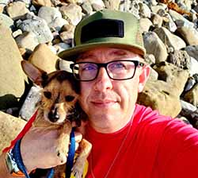
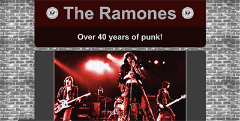
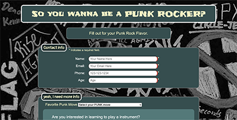
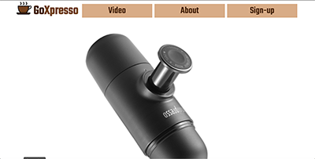
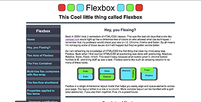
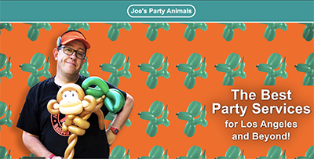

Web design / Graphic Designer
About

I am a small business owner of a successful party entertainment business in business since 2011 offering great customer service. I bring over 10 years of professional Graphic
Design experience in the publishing world and over a decade of experience in customer service to the table. I’ve
acquired several years' management experience in customer service and in a business environment. I feel I would be a
great asset to any team. In addition I have received an associates degree in Programing for business along with several certificates in web development.
Projects
- 
- Tribute Page
- 
- Survey Form Page
- 
- Landing Page
- 
- Technical Document
- 
- Personal business page
 Twitter
Twitter